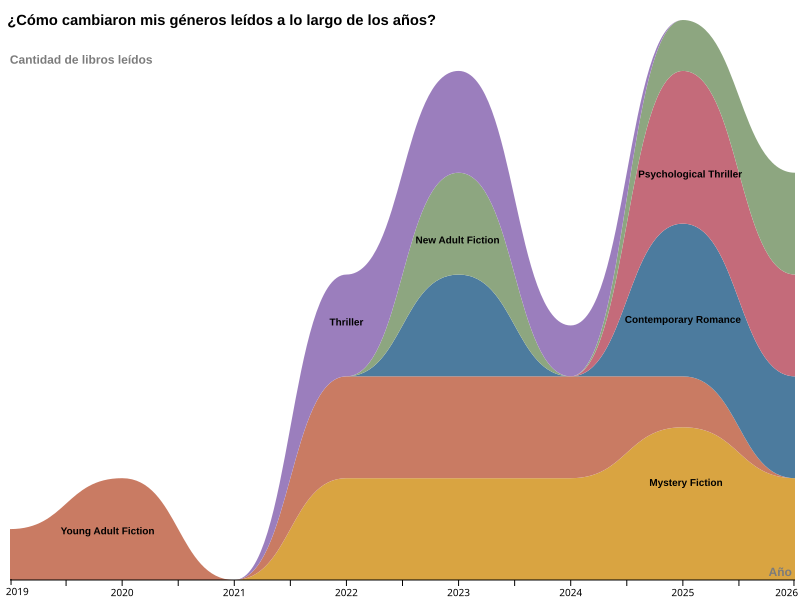

Una exploración visual de mis hábitos de lectura, inspirada en Dear Data
Para este trabajo, decidí explorar mis propios datos de lectura: los libros que leí, sus géneros, autores y puntuaciones. A partir de estos datos armé estas visualizaciones que cuentan, cada una a su manera, una parte de esta historia.
